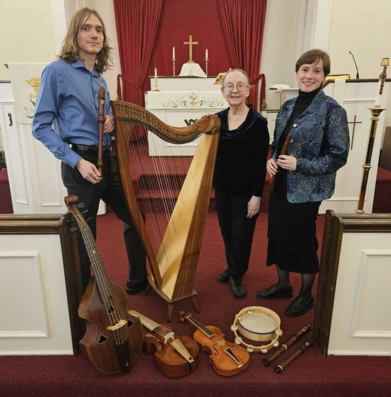
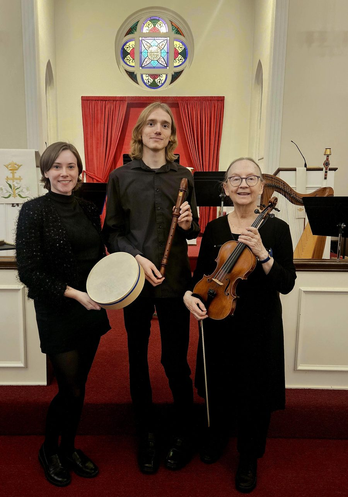
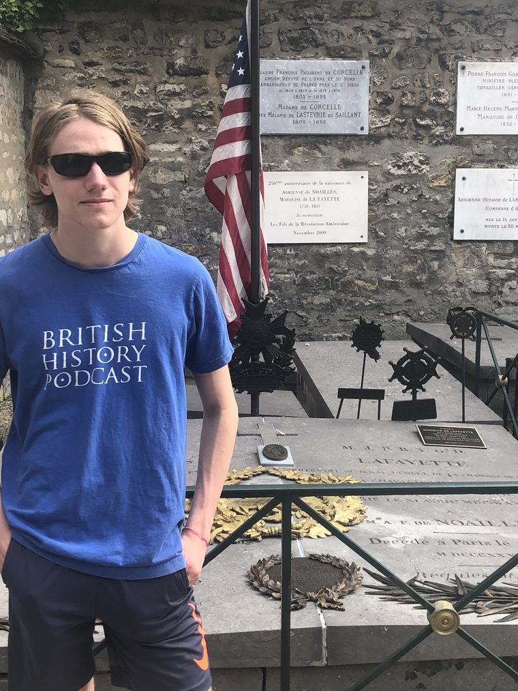

Other Interests
Outside mathematics and physics, my main interests are early music and history. I enjoy sharing my interests with others.
Early music
I'm a founding member of Musica Antiqua of Central Pennsylvania, an early music ensemble that performs medieval, Renaissance, and Baroque repertoire. Our programs span six centuries, from Hildegard of Bingen's twelfth-century chants to better-known Baroque composers such as Handel and Telemann. I play several instruments, including descant and treble recorders, as well as the crumhorn. We perform at public concerts, benefit performances, programs for families, local churches, and weddings. We have also played at the Boalsburg Renaissance Faire and the People's Choice Festival of Pennsylvania. In addition, I've performed in Early Music Ensemble concerts at the Penn State School of Music.
I have spent parts of my summers at the Early Music Retreat at the Interlochen Center for the Arts and at the Bloom Early Music Workshop in Bloomsburg, PA.


History
Along with my majors in Mathematics and Physics, I'm completing minors in both history and Spanish. I am especially interested in Anglo-Saxon England, as well as both medieval and modern European history. I have given invited lessons at my former middle and high schools on Anglo-Saxon England and the European revolutions of 1830 and 1848. On a visit to Paris I put together my own French Revolution tour, which included visiting Lafayette's grave in the Picpus Cemetery.
Having lived in the United States, Germany, and the United Kingdom, I have always been interested in other languages and cultures.
